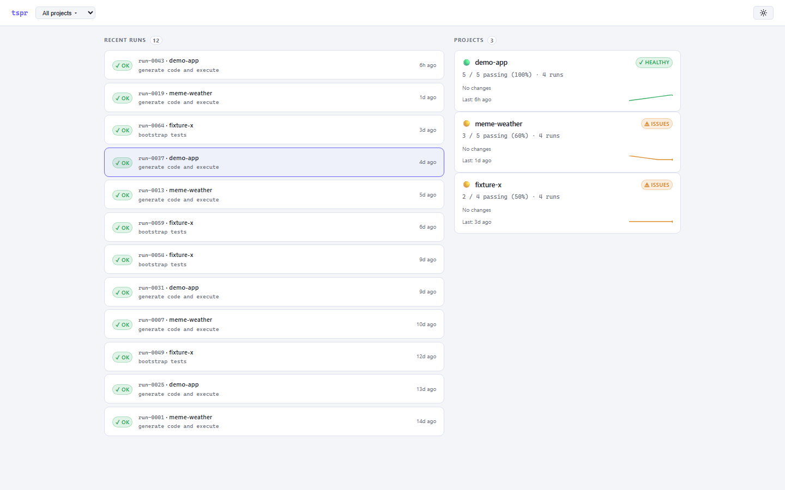
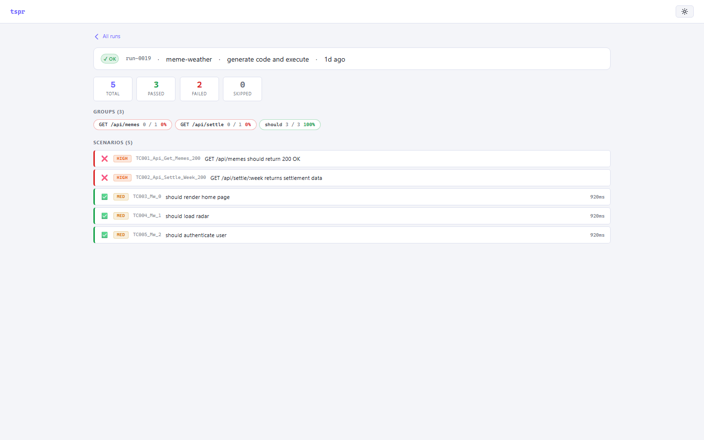
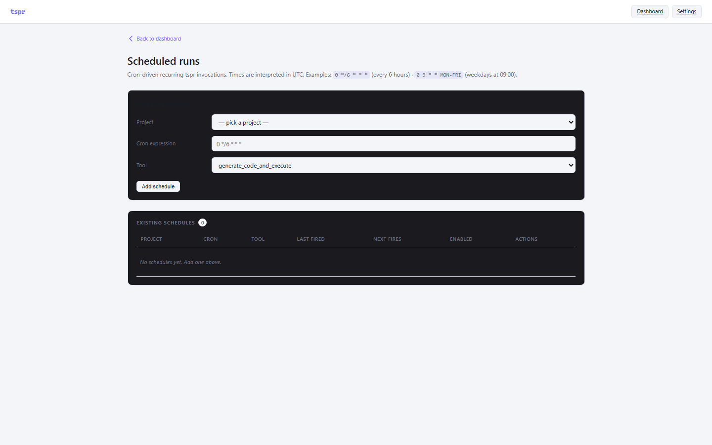
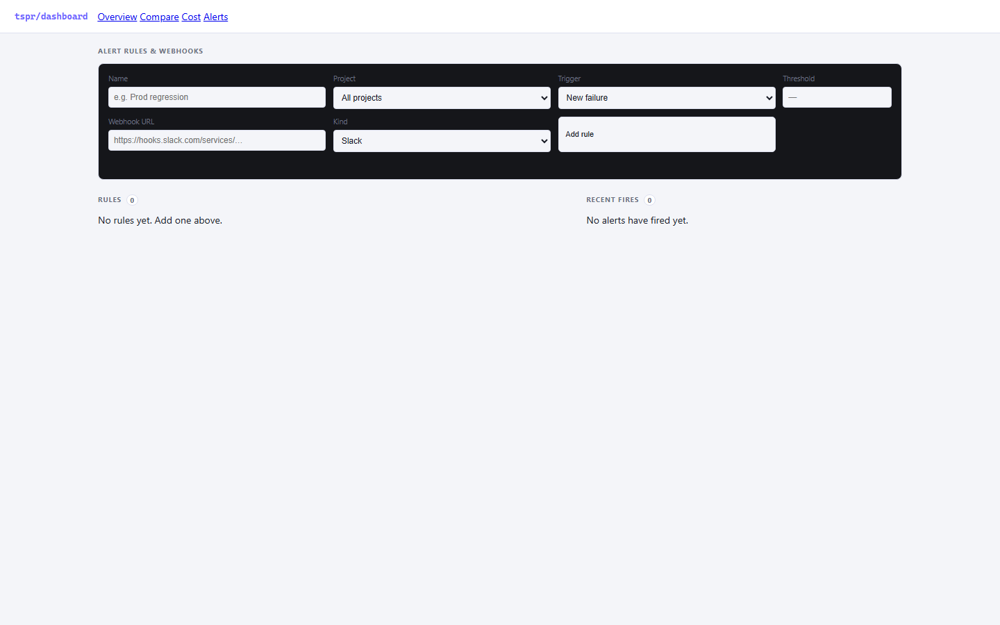
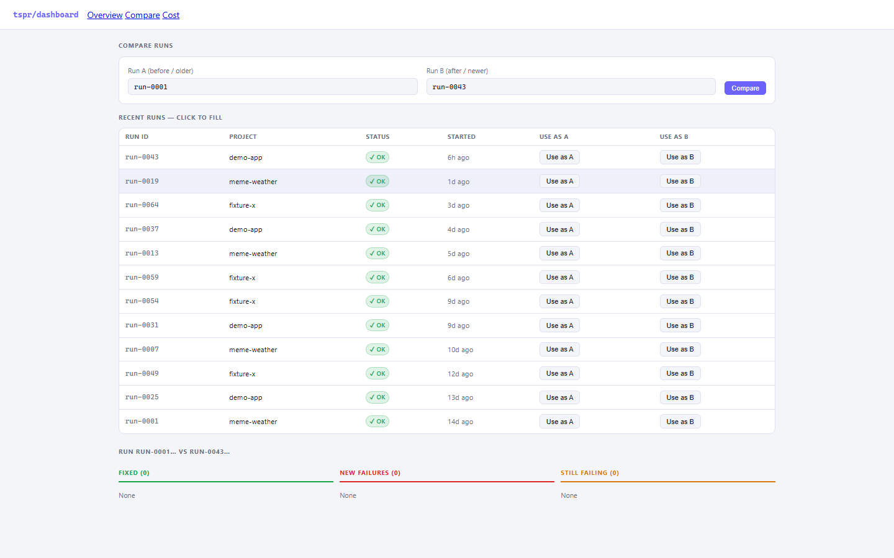

AI 给你 空气测试
我们找的是 真问题
tspr 是本地 AI test generation MCP。指 Express API 给它，30 秒内扫路由 → LLM 写 supertest → Docker 沙箱跑 → 抓出真 HTTP-status 问题。不是写测试，是找真问题。
这是 tspr。
30 秒看完它怎么工作。
tspr 的 MCP 工具…
tspr.bootstrap_tests({ projectPath: "./", type: "backend" })
- Attempt 1 · LLM returned empty (MiniMax-M2.7 burnt all completion tokens on reasoning)
- Attempt 2 · cleaned = 0c · max_tokens 16k → 32k
- Attempt 3 · ✓ generated 41 supertest scenarios · 14.2s
- Sandbox · → vitest run · all 41 scenarios collected · 6 fail · 35 pass
0 9 * * MON
47s · $0.04
webhook fired ✓
// lib/memes/settle.ts:42 const now = new Date(); // ✗ 服务器本地 TZ if (now > week.settles_at) {...}
// app/api/memes/[id]/bet/route.ts const user = await getUser(); await updateWallet(user.id, -amount); // ✗ no row lock
// app/api/graveyard/route.ts const offset = page * limit; // ✗ 应该 (page-1) * limit return db.select().offset(offset);
本机已起好 · 点 URL 即玩
▶ http://192.168.22.2:76543 步开 真测试
不用注册账号。不用上传代码。一条命令本地起，或者接进 Claude Desktop / Cursor / Cline 的 MCP。
装 CLI 或接 MCP
# 方式一：本地 CLI $ npm i -g @tspr/cli # 方式二：MCP（claude desktop 配置） "tspr": { "command": "node", "args": ["~/tspr/dist/cli/index.js", "mcp"] }
对你的项目跑
$ cd ~/your-api $ tspr bootstrap ✓ detected Node + Express $ tspr execute ✓ 15 routes scanned ✓ 41 scenarios planned ✓ 100% recall · 47s · 0.04 USD
看 dashboard 看真问题
$ tspr dashboard → http://127.0.0.1:7654 # 或者远程访问 $ tspr tunnel → https://your-name.loca.lt
本地 dashboard 真看到的东西
不是 mockup 不是宣传图。下面 5 张是真 dashboard 实拍——你点 live demo 看到的就是这样。





点任何一张图都跳到我本地 dashboard 的 live tunnel → http://192.168.22.2:7654
不是 LLM 写测试。是 LLM 找真问题。
tspr 把 AI test generation 拆成 4 个可观测、可量化的步骤，每步都能用 hardener-bench 真打分。
app.use(prefix, router) 嵌套挂载，输出真实路由清单。vitest-results.json 完整带 stack。行业唯一同时测全 5 维
别人家最多覆盖 2 维。false_fail_rate 和 fix_region_precision 是 hardener-bench 独家——大多数工具不敢测自己。
不是我们自己说。是独立 bench 算的。
所有上面的分数 — 路由召回 100% · 抓 100% bug · false_fail 0.30 · cost $0.04 — 都不是 tspr 自己测自己。是一个独立的开源 benchmark 项目 hardener-bench 跑出来的。它把 tspr 当成被考的，不当成考官。
同一份 report.json 给两个人跑，分数 byte-identical。
reports/<timestamp>-tspr-<fixture>/score.json，CI 可 diff，PR 必看趋势。tspr-target (Express 入门) · VAmPI (Python OWASP) · meme-weather (真生产)。路线图：BugsJS / juice-shop / multi-swe-bench。
npm run start:fixture tspr-targettspr execute --target localhost:3003npm run bench -- --tool tspr --fixture tspr-targetreports/2026-05-29.../score.jsonfalse_fail（不瞎报）和 fix_region（指哪行）—— 别人都不敢公开自家分。repo: github.com/Upp-Ljl/hardener-bench
不是糖水 demo。3 个难度阶梯。
从入门 fixture 到真正的 production-grade web app — tspr 在每一档的表现都摊开给你看，不藏短，不挑数据。
L1 · tspr-target
手写 Express CRUD app，6 个 HTTP-status-shape 故意 bug（PUT 不存在 id 返 200 / POST 空 body 返 201 / DELETE 特殊字符崩 500 等）。验证 tspr 基本扫描和执行能力。
L2 · VAmPI
OWASP-published 真漏洞 fixture（SQLi + Mass Assignment + BOLA + 越权 + Excessive Data Exposure）。Python Flask 应用 — tspr 现阶段是 Node-only，直接拒收。诚实摊开短板，不藏。
📋 工作中：Python Flask / Django + Java Spring + Go 适配（Q3 路线图）
梗气象台 — 真上线的 web app
下下个真实 fixture：一个上 Vercel + Supabase 真生产的 Next.js 15 web app。比 tspr-target 难几个数量级——SSR + RSC + auth + realtime + 文件上传 + cron 任务全在一个仓库里。
梗气象台 (meme-weather)
▶ 真打开 · live这不是测试 fixture，这是一个真上 Vercel 运行、有 user / 有 prod data 的 web app。它藏了 3 个生产级 bug — 不是"PUT 不存在 id 返 200"这种 toy bug，是真实代码 review 都容易看漏的那种。
new Date() 服务器本地时区而非显式 UTC。跨 UTC 边界的 bet 被算到错的 week 结算里。code review 几乎抓不到，除非测试跨时区 fixture。offset = page * limit 而非 (page-1) * limit。第 1 页和第 2 页有重叠记录，第 0 条永远丢失。
⚠️ 诚实声明：早期 28 次跑发生在今天 8 个 tspr 产品 bug 修复之前。当时 codegen 不读 fixture 源码 + vitest stdout 截断 + bench parser 错位
→ 8 bug 全部修完后 tspr 才有能力抓这 3 个生产 bug。下次 benchmark run 在路上。
同一份 fixture，8 个 bug 修了之后分数曲线
这是今天对 tspr 改进的真实成绩单。每一步都是 hardener-bench 自动量化的——不是"感觉变好了"。
初始
.tspr/test_results.json不要 SaaS。你的代码不出本机。
tspr 100% 本地运行：MCP server + Docker sandbox + 本地 SQLite + 本地 dashboard。代码不上传任何 cloud。
🚀 直接看 live dashboard
已经在我本地起好 dashboard，并把 7654 端口隧道到公网了——任何电脑点下面 URL 都能进。
http://192.168.22.2:7654
LIVE 🌐 PUBLIC
⚠️ 首次访问 localtunnel 会显示一个"反爬中转页"问你的 IP，填一下点 continue，之后透传到我本地 dashboard。